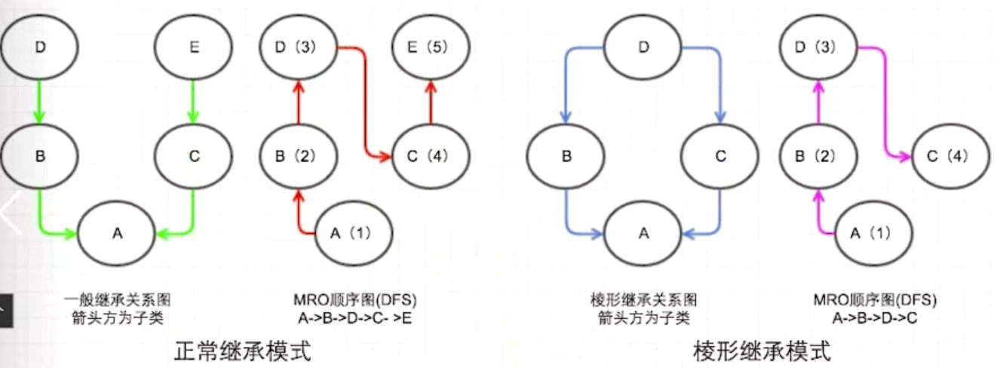
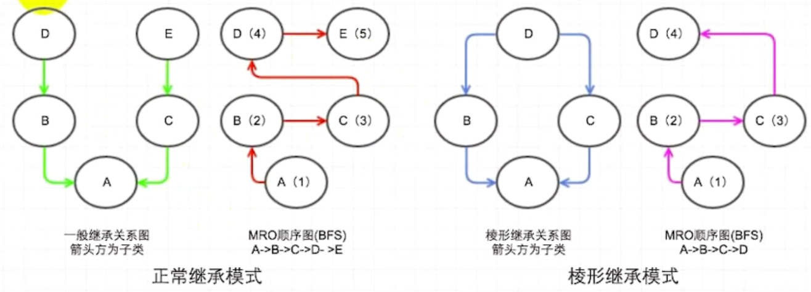
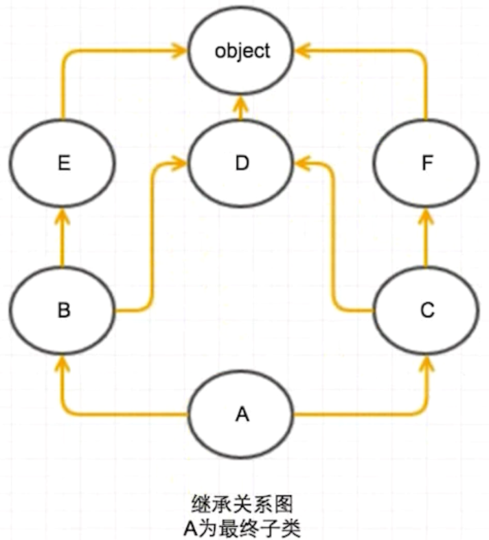

注意
from modulename import * 尽量避免使用，可能会造成变量冲突之类
name
每个模块都有一个 name属性，当其值为”main“时，表示该模块自身在运行，否则模块是被另一个程序引入的，此时值为模块的名字1
2
——————————————–
堆栈
- 栈是向低地址扩展的数据结构，连续的，编译器分配的
- 堆是向高地址扩展的数据结构，碎片的，程序员自己分配的
面向对象：
- 类方法
(1) 无序实例化，直接使用类名调用
(2) 定义: 使用@classmethod - 静态方法
(1) 可以用类或对象调用，但是无法获取类内的属性和方法，完全独立的方法.
(2) 使用@staticmethod 定义, 可以用对象或者类来调用 - 代码
1
2
3
4
5
6
7
8
9
10
11
12
13
14
15
16
17
18
19
20
21
22class Person(object):
# 对象方法
def eat(self, x, y):
return "hello" + x + y
# 类方法
@classmethod
def run(cls, m):
return "run %d"%m
# 静态方法
@staticmethod
def play(x):
return "play" + x
Person.run(20)
per = Person()
per.eat('apple', 'egg')
per.play('ball')
Person.play('ball')
创建单例类，使用new()
- 变量
(1) 私有属性
(2) xxxx 属于特殊变量, 不是私有的python中，实例的变量为__xxxx，则为私有属性，只能在内部访问，或者通过公有的方法间接访问私有属性 原理： python 解释器对外将 __xxxx 改为 _Classname_xxxx, 所以不能再外部直接访问
(3) _xxxx变量，虽然可以在外部访问，但是约定俗成，视为私有变量，不要在外部随意访问
@property
- 使用 @property 来实现 get, set 方法; 让私有属性可以使用.语法
1
2
3
4
5
6
7
8
9
10
11
12
13
14
15
16class Person:
def __init__(self, money):
self.__money = money
@property
def money(self):
return self.__money
@money.setter
def money(self, value):
self.__money = value
person = Person(10)
print(person.money) # 调用了 money get方法，返回__money
person.money = 2000 # 调用了 money set方法，修改__money 值
print(person.money)
动态给实例添加属性与方法
python的类实例化一个对象后，可以给对象绑定任何其他的属性和方法
1
2
3
4
5person = Person()
def run():
do something
from types import MethodType
person.run = Method(run, person)要给类的所有实例都绑定属性和方法，则给类绑定方法，（此时，不仅已经创建的对象会绑定新方法，将来创建的对象也将绑定新方法）
限制实例的属性，不让对象随意添加属性，只能添加规定的属性。
解决：创建类时，使用slots 限制1
2
3
4
5
6
7
8
9class Person(object):
__slots__ == ("name", "age", "height", "weight", "money", "run")
def __init__(self, money):
self.money = money
person = Person()
def play():
do something
person.play = play # 报错，只能绑定__slots__ 中规定的属性或者方法
单例
一种设计模式，目的是确保一个类只有一个实例存在
实现单例的方式
(1) 使用模块
原理：python模块是天然的单例，模块第一次导入，会产生.pyc文件，二次使用，直接使用.pyc, 不会再执行模块代码1
2
3# 创建Card.py 定义Card类，并初始化一个card 对象 ccc
# 在另一个文件中导入c，则是一个天然的单例
from Card import c(2) 使用new
每次实例化的时候，都只返回instance同一个对象1
2
3
4
5
6
7
8class Card(object):
def __new__(cls, *args, **kwargs):
if not hasattr(cls, "instance"):
cls.instance = super(Card, cls).__new__(cls)
return cls.instance
def __init__():
do something(3) 使用装饰器(最常用)
1
2
3
4
5
6
7
8
9
10
11
12
13
14
15
16def singleton(cls):
instances_dict = {}
def getinstance(*args, **kwargs):
if cls not in instances_dict:
instances[cls] = cls(*args, **kwargs)
return instances[cls]
return getinstance
@singleton
class Card(object):
def __init__():
do something
c1 = Card()
c2 = Card()
c1 is c2 # True(4) 使用元类: 略
str() 和 repr()
- 调用 print 方法打印类对象，会自动调用类的str()方法， 重写该方法可以定制print()打印该对象的格式
- 在解释器交互式中，输入对象名（变量名）回车，会调用类的 repr() 方法，重写该方法可以定制解释器下该对象的格式
继承
单继承的实现
1
2
3
4
5
6
7class Person(Object): # Person 继承于 Object
def __init__(self):
do something
class Student(Person): # Student 继承于 Person
def __init__(self):
do something多继承的实现
1
2
3
4
5
6
7
8
9
10
11
12# 注意：如果两个父类中有相同的方法， 使用子类调用该方法时，如__init__方法，如果不重写这个方法，默认调用最前面的父类，这里是Add
def Add(Object):
def __init__(self, x):
self.x = x
def Sub(Object):
def __init__(self, x):
slef.x = x
def Calculator(Add, Sub): # Calculator 继承于 Add, Sub
pass
cal = Calculator(5)
mro
概念： 方法解析顺序, 多继承时，出现方法重名，到底应该进程哪一个？会出现二义性
- 情况1：B和C分别继承与A与A1类，且A与A1类都定义类f()方法，D继承自B和C, 此时，D继承B的f() 还是 C的f()
- 情况2：A类中定义了f() 方法， B与C都继承与A, D继承自B和C, 此时，D继承B的f() 还是 C的f()
c++解决二义性：
- 情况1: 通过同名覆盖解决
- 情况2：通过虚继承来解决
python类的发展
- 经典类：2.2 以前，没有继承的类，定义时，class Name 就可以，不需要(Object)
- 新式类: 有Object
python解决二义性——mro(通过C3算法解决避免二义性的情况)
1
2
3
4
5
6
7
8
9
10import inspect
class A:
pass
class B(A):
pass
class C(A):
pass
class D(B, C):
pass
print(inspect.getmro(D))(1) 对于python3来说，上述代码，只有新式类，默认继承关系是：
1
2# 先在D中寻找函数，没有定义，找B, 再找C, 找A, 最后找到Object
(<class '__main__.D'>, <class '__main__.B'>, <class '__main__.C'>, <class '__main__.A'>, <class 'object'>)(2) 对于python2来说，新式类和经典类并存，class A被认为是经典类，其继承关系是：
1
2# 先找D, 再找B, 找C, 最后找A, 不找Object
(<class __main__.D at 0x7f4d5ad8e1f0>, <class __main__.B at 0x7f4d5ad8e120>, <class __main__.A at 0x7f4d5ad8e0b8>, <class __main__.C at 0x7f4d5ad8e188>)(3) 总结：
经典类的MRO算法是DFS （深度优先遍历）

不足之处：对于第二种菱形继承方式, 存在公共父类的多继承，这种情况使用DFS遍历到C之前，必须到D, 如果D中有一些初始化属性和方法，但是C中重写了这些方法与属性，那么最终导致C中重写的属性和方法永远无法被继承到（因为找到D就找到方法名了，不用往下找了）或者说A不能继承重写C中的方法, 如下代码:
1
2
3
4
5
6
7
8
9
10
11
12
13class D:
def f(self):
print "in D"
class B(D):
pass
class C(D):
def f(self):
print "in C"
class A(B,C):
pass
a = A()
a.run() # 在 Python2.x 中， a 只能调用 D中的f新式类的MRO算法是 BFS (广度优先遍历)

不足之处对于第一种继承方式，当D, C有同名函数时， A继承不到D的函数, 违背了单调性(如果父类找不到，找爷爷)
现在的MRO算法是C3算法（拓扑排序）可以解决DFS和BFS的问题： 无法继承重写和非单调性
1
2
3
4
5
6
7
8
9
10
11
12
13
14import inspect
class D(object):
pass
class E(object):
pass
class F(object):
pass
class C(D, F):
pass
class B(E, D):
pass
class A(B, C):
pass
print(A.mro())继承顺序如下：
1
[<class '__main__.A'>, <class '__main__.B'>, <class '__main__.E'>, <class '__main__.C'>, <class '__main__.D'>, <class '__main__.F'>, <class 'object'>]
算法过程：
- 从左侧开始找入度为0的点，找出A,
- 将A的边减掉
- 在剩下的图中重复 1-2 步骤
- 最终序列为 ABECDF-Object
python多态
一种事物的多种形态，多态的前提的继承，如下代码
2
3
4
5
6
7
8
9
10
11
12
13
14
15
16
17
def __init__(self, name):
self.name = name
def eat(self):
print ("%s 吃"%self.name)
class Dog(Animal):
# 可重写 eat 方法
pass
class Cat(Animal):
# 可重写 eat 方法
pass
class Person(Object):
def feedAni(self, ani): # 因为有多态，一个方法可以feed任意种Animal
ani.eat()
python mixin模式
在不使用多继承的情况下，动态添加父类，类似于java的接口
2
3
4
5
6
7
8
9
10
11
12
13
14
15
16
17
18
19
20
21
22
23
24
25
26
27
def func1(self):
pass
def say(self):
print("i am mixin")
class Person(object):
def say(self):
print("i am a person")
class Student(Person):
pass
stu = Student()
stu.say()
def mixin(pyClass, pyMixinClass, flag=0):
if flag: # flag 为1， 表示将mixin类设置为主 父类
pyClass.__bases__ = (pyMixinClass,) + pyClass.__bases__
elif pyMixinClass not in pyClass.__bases__:
pyClass.__bases__ += (pyMixinClass,)
else:
pass
mixin(Student, TestMinXin, 1)
print(Student.mro())
stu.say()
i am a person
[<class '__main__.Student'>, <class '__main__.TestMinXin'>, <class '__main__.Person'>, <class 'object'>]
i am mixin
1
魔术方法 xxxx 方法
- 常见魔术方法
(1) 初始化：init(), new(), del()
(2) 属性控制：
(3) 数学运算， 比较运算：
(4) 容器方法: len(), iter(),
(5) 描述对象: get(), set(), delete()__contains__() ----- in - 运算符重载 eg: add 方法重写，相当于 + 重载
- 属性监听 eg: getattr 对.引用监听，找不到.属性，执行 getattr 方法； setattr 对.属性赋值监听，当对.属性赋值时，执行setattr方法
- 枚举类
类装饰器
类装饰器主要借助 call 方法
基本的类装饰器
1
2
3
4
5
6
7
8
9
10
11
12
13
14Class AAA(object):
def __init__(self, f):
self.f = f
def __call__(self, *args, **kwargs):
print('---------')
res = self.fun()
return res
@AAA
def fun():
print("hello world")
fun()
# 原理：fun() 相当于执行了 obj = AAA(); fun = obj; fun() 相当于执行了 类的 __call__ 方法传参的类装饰器
1
2
3
4
5
6
7
8
9
10
11
12
13
14class AAA(object):
def __init__(self, count):
self.count = count
def __call__(self, f):
def inner(*args, **kwargs):
for i in range(self.count):
f(*args, **kwargs)
return inner
@AAA(5)
def fun():
print('hello world!')
fun()
# 原理：@AAA(5) 相当于创建了一个对象 ===>obj = AAA(5)===> 接下来执行obj(fun) 调用 __call__ 返回 inner
python自动发送邮件
- 需要用到的模块
(1) email.mime.MINEText 用于封装邮件内容
(2) smtplib 用于连接邮件服务器
linux 常用命令
软链接和硬链接
(1) 区别：- 硬链接是为文件起别名。 A是B的硬链接，则 A 与 B 指向同一个数据块(inode节点)，是平等的。rm A 只是删除了文件名，对应的数据块只有在inode节点链接数减少为0的时候才会被回收
- 软链接是快捷方式, 是重定向。A是B的软件链接，则A 指向 B, B 指向真正的数据块。 A与B指向的是两个不同的inode, B被删除了，则A链接失效。
(2) 注意：
不能对目录创建硬链接——可能出现链环，导致文件遍历操作混乱。
(3) 创建链接：1
2
3
4
5
6
7# 查看或者合并文件
cat test1.txt test2.txt > test.txt
# 创建链接
# 软链接——快捷方式，指针，源文件删除则软链接失效
ln -s 源文件 链接文件
# 硬链接：删除源文件，链接文件还是存在的
ln 源文件 链接文件
linux 常见的三大文本处理工具
(1) awk
(2) sed
(3) greplinux 文件查找
(1) find- find ./ -name test.sh
- find ./ -name “*.sh” 模糊查询，查找当前目录下所有后缀为.sh的文件
- find ./ -name “[A-Z]*” 查找当前目录下所有以大写字母开头的文件
- find ./ -size 2M 查找在/tmp目录下等于2M的文件
- find ./ -size +2M 大于2M的文件
- find ./ -size -2M 小于2M的文件
- find ./ -size +4k -size -5M 大于4K且小于5M的文件
- find ./ -perm 0777 查找权限为777的文件或者目录